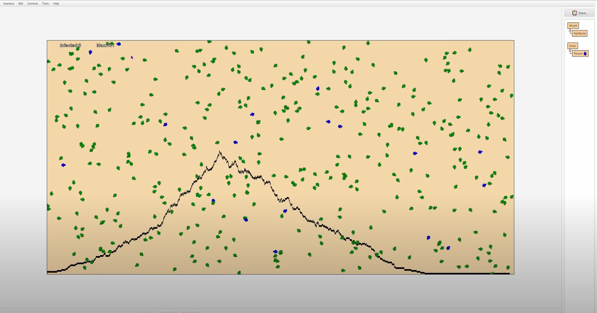
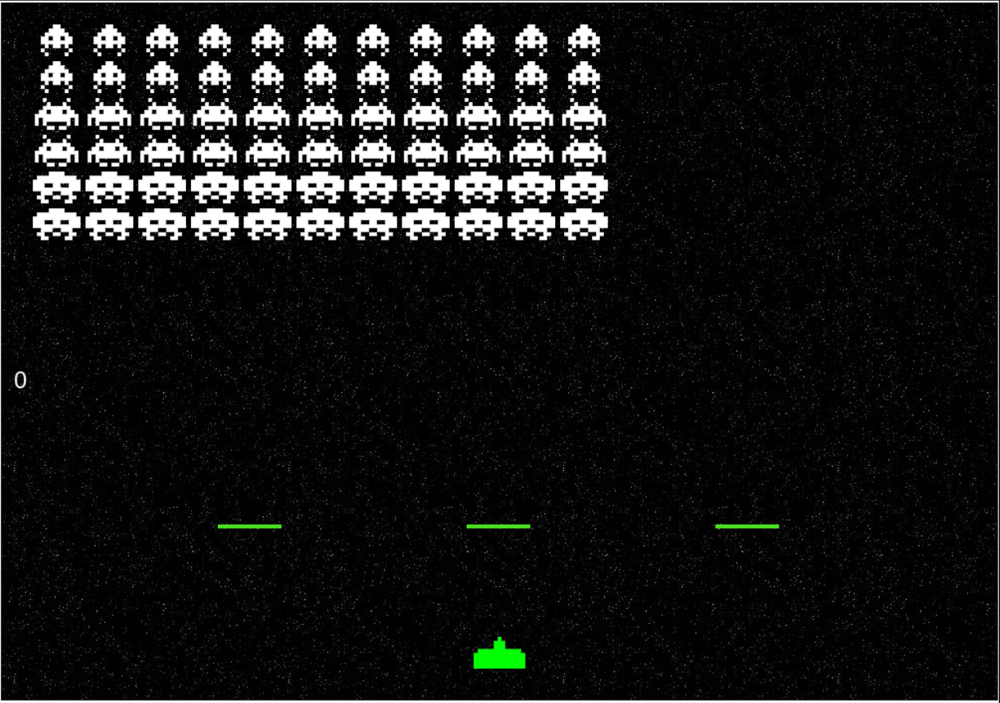
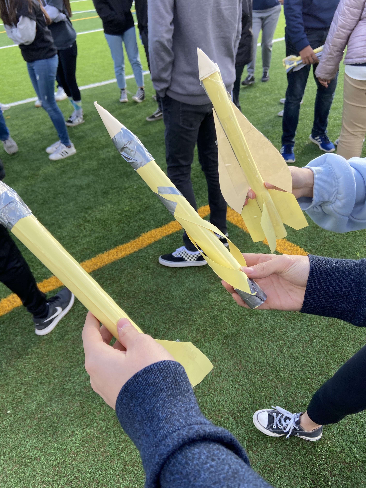

This project promted us to create an interactive chatbot either through machine learning models utilizing previously trained interfaces or a process of creating your own simpler model. Akash and I chose to create our own simpler and more flexible chatbot algorithm that utilized a double array to detect and produce responses. The double array allowed us to add new responses and replies at any time given as well as making it simpler for us to make the chat bot specific to a topic. In this scenerio we made a chatbot that was focused around the Star Wars universe. The chatbot would imiate the Star Wars character Yoda. I completed most of the inital set up and hardcoding while Akash worked on the finishing touches and troubleshooting.
Link to project doc / / Link to project code

Pathogen Simulation Project
AP CSA: August 2020
In this solo project introducing the class to the basics of Java I utilized the Greenfoot system to improve upon the pathogen simulation we had built. Intially the simulation situation for fewer varibales and only accounted for people being infected or quarantining. I was able to add variables that monitored and allowed for those that did become immune to have a chance at being infected again as well as a including a base invulnurability chance and imporved simulation of a quarantined person. This project taught me the basics of python as well as the Greenfoot system and some challeges I faced during this project was with troubleshooting the different variables and chance simulations that I had included.Link to project Code / / Link to project presentation.

Derivatives Space Invaders
AP CSA: December 2020
In this project my team, Tanish Baranwal, Ayush Bandopadhyay, and Joey Huang, we were able to create a project that made practicing derivatives more fun and entertaining. In this project we put to use the java concepts that we had covered in class pertaining to if statements, while loops, conditionals and proper java implementation. Here we take the classic space invaders game and change it so that everytime a shot is fired and hits an enemy ship a derivative question is asked. We faced issues in merging code as we all had different coding process and basic troubleshooting took us longer than expected. My role in this project was level designing and basic level features as well as sourcing and finding the images used for the projects.
Link to project brainstorm doc / / Link to project milestones

Aerodynamic Design Project
Dublin High School: January 2020
This is a project that I worked on with Anna He and John Kim. I enjoyed building and designing different rockets and learned a lot about aerodynamics. In this project, we created projectiles to be launched with 60 fps of force. This project was paired with our field trip to the Patriot Jet Team Foundation Hangar where we explored the designs of planes and the change of understanding about aerodynamics over the years. I learned about the importance of drag reduction as well as stability for a projectile. My initial design was a rocket that had curved fins that caused spin and increased drag but also increased stability. However, after the field trip, I designed my second rocket to be slim with short straight fins to reduce drag and launch the rocket much farther than the first design. Link to project documentation.
Solar-Hydrogen Vehicle
Principles of Engineering: November 2019
This project that I had worked during my time in the Principles of Engineering course was very intriguing and fun to build.
I worked on it with my three teammates, Alex Woods, Kade Angell, and Eeshan Walia. The basis of this project was to create a motor-powered vehicle that will be able to utilize a solar panel and hydrogen cell as a power source (separately). We then were asked
to compare the results of the different power sources on the vehicle and create a hypothesis on the usability of the power source.
We faced many challenges in building this vehicle transforming it from our initially designed vehicle to our final prototype.
One major hindrance was our choice to experiment with a beveled gearbox. Not only did they cause lots of friction leading to our vehicle being unable to move, but it also caused us to lose time in this project. However, once we had identified the problem as the gearbox itself we were able to quickly change it out and continue with our project. I played the role of a troubleshooter and mechanical engineer.
I assisted in the overall designing and building of the vehicle but also helped in solving some of the issues present in our unrefined prototype. Link to project documentation.
Entrepreneurship Project: IBC
Dublin High School: Spring 2019
This project that my friends and I worked on for an engineering competition at our school. This might seem repetitive to the other pages but this project focuses on the real-world problem of the constantly running water heater. The concept is that through machine learning an easily installed device would learn your hot water usage patterns and turn the water heater on as needed. This greatly reduces the use of fossil fuels and emissions caused by the running of the water heater as well as save the consumer money. We plan to improve this into a finalized product that could be sold in the market. My role in this project was sales and overall management. I kept in track how much energy we would be saving, how our product might do in the market and made sure that we were on the track of the goal. Link to project documentation.
Hangman Project
Computer Science Principles: February 2019
The python hangman project is something I worked on with my partner Anshul. Python is a simple but powerful programming language.
By itself, you can create and assign, iterate through different variables to complete complex calculations. When you pair it with the different python libraries it becomes a powerhouse language that can basically do anything. This project is an example of the iterative features of python.
By iterating through the different words to check if the guess is in the word. Anshul had little trouble with the coding for this project and
with his help, I was able to learn many new things about the possibilities in python using iterations. Link to python workspace
Boxy's World
Computer Science Principles: September 2018
This is a scratch game that I made with my partner, Alex Baker. Scratch is simple to use and if used to its full potential can make some amazing things. Our game is about a box, Boxy, who gets his ball stolen by Flaming Red Hair Guy (FRHG) and has to travel through his world to get it back. This game would fall under the platformer category. The purpose of these projects was to introduce us to basic coding and teamwork. We saw learned how coding might look like and learned to work together, communicate, and help each other out. The idea for this game came from looking into other platformer games and wanting to make one ourselves. I had a great time working on this project with Alex and learned a lot by making this game. Link to project documentation.